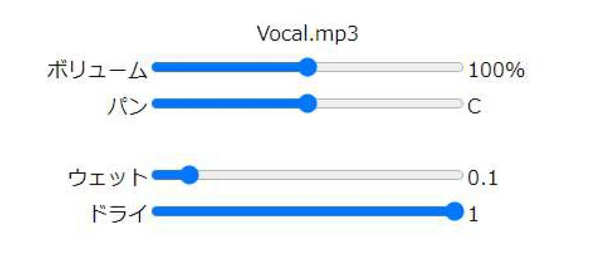

パラメーター
リバーブのパラメーターには2つありドライ、ウェットがある。
ウェット、ドライはともに0～1まで0.1刻みで調整できる。

リバーブの解説
リバーブは、反響音を追加するエフェクターです。
ミックスダウンにおいてのリバーブは、楽器の奥行を演出するために使われます。
各パラメーターの説明をします。
スレショルドは、それ以上超えたら音を小さくする音量を表します。
ドライは、原音の大きさを表します。
ウェットは、リバーブの与えられた音の大きさを表します。
どのパラメーターも、曲のジャンルや曲の中の展開でも設定の仕方は変わってきます。
例えば、ボーカルの雰囲気に合わせて深くリバーブを与える場合や、近くにある印象を持たせるために浅く与える場合もあります。
ここのシミュレーターではパラメーターは少ないが、リバーブの種類によっては反響音の長さだったり、リバーブの部屋の響きだったりを細かく設定できるものもあります。
プリセットの設定について説明します。
ボーカルは、少し奥にある印象を持たせるためにウェットを少しだけ与えている。ドライは原音をそのまま出すため1にしています。
どのような変化があるのかを確かめてみましょう。
「Bypass」のボタンを押してリバーブの効果をオフにしてみましょう。
その状態で再生してみると、目の前に張り付いたように聞こえ、ボーカルが浮いたような印象になります。
このような状態をリバーブで効果を与えることで、ボーカルを奥に動かし、全体になじませることができる。
トップページに戻る